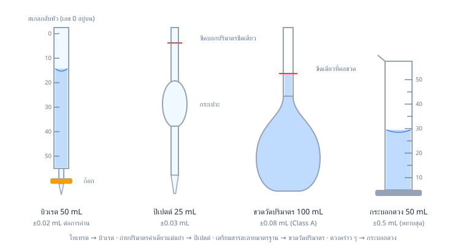
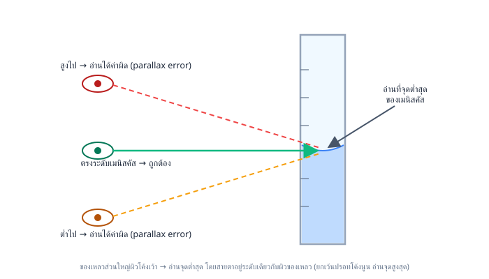

1วิธีการทางวิทยาศาสตร์และเลขนัยสำคัญ
1. วิธีการทางวิทยาศาสตร์ (Scientific Method)
หลักคิด: วิทยาศาสตร์ไม่ได้เดาสุ่ม แต่ใช้ขั้นตอนที่เป็นระบบและ วนซ้ำได้ เพื่อหาคำตอบที่เชื่อถือได้ แบบฝึกหัดชอบถามทั้งลำดับขั้นตอนและการออกแบบการทดลองที่ยุติธรรม
1.1 ขั้นตอนวิธีการทางวิทยาศาสตร์
- สังเกต/ตั้งคำถาม — สังเกตปรากฏการณ์ แล้วตั้งคำถามที่ต้องการหาคำตอบ
- รวบรวมข้อมูลเบื้องต้นและตั้งสมมติฐาน — ค้นคว้าความรู้ที่มีอยู่ แล้วเสนอคำตอบที่เป็นไปได้ (สมมติฐาน) แบบที่ทดสอบได้จริง
- ออกแบบและทำการทดลอง — วางแผนวิธีทดสอบสมมติฐาน กำหนดตัวแปรให้ชัดเจน แล้วลงมือทำ
- วิเคราะห์ผล — รวบรวมข้อมูลที่ได้ จัดตาราง/กราฟ หาความสัมพันธ์
- สรุปผล — ตัดสินว่าข้อมูลสนับสนุนหรือคัดค้านสมมติฐาน แล้วสื่อสารผลลัพธ์
ระวัง: ขั้นตอนนี้เป็นวงจรวนซ้ำ ไม่ใช่เส้นตรงที่ต้องเดินไปข้างหน้าอย่างเดียว — ถ้าผลการทดลองขัดกับสมมติฐาน นักวิทยาศาสตร์สามารถย้อนกลับไปตั้งสมมติฐานใหม่หรือออกแบบการทดลองใหม่ได้ และในทางปฏิบัติจริงบางขั้นตอนอาจสลับลำดับหรือทำควบคู่กันได้ ไม่จำเป็นต้องทำครบ 5 ขั้นตอนแบบตายตัวเป๊ะทุกครั้ง
1.2 ตัวแปรในการทดลอง
| ตัวแปร |
นิยาม |
บทบาท |
| ตัวแปรต้น (ตัวแปรอิสระ) |
สิ่งที่ผู้ทดลอง จงใจเปลี่ยนค่า |
เป็น "เหตุ" — มีได้ปกติทีละ 1 ตัวต่อการทดลองชุดหนึ่ง |
| ตัวแปรตาม |
สิ่งที่ วัดผลลัพธ์ ที่เปลี่ยนไปตามตัวแปรต้น |
เป็น "ผล" |
| ตัวแปรควบคุม |
สิ่งที่ต้อง คงที่ทุกชุดการทดลอง เพื่อให้เปรียบเทียบยุติธรรม |
มีได้หลายตัวพร้อมกัน |
หลักการออกแบบการทดลองที่ดี: เปลี่ยนตัวแปรต้นทีละตัวเดียวต่อชุดทดลอง — ถ้าเปลี่ยนพร้อมกันหลายตัว จะบอกไม่ได้ว่าผลที่เห็นเกิดจากตัวแปรใดกันแน่ สรุปเหตุ-ผลไม่ได้ชัดเจน
ชุดควบคุม (control) คือชุดทดลองที่ ไม่เปลี่ยนตัวแปรต้นเลย (ใช้สภาวะปกติ/ค่าอ้างอิง) เพื่อเป็นค่าเปรียบเทียบว่าผลที่เห็นในชุดทดลองอื่นเกิดจากการเปลี่ยนตัวแปรต้นจริง ไม่ใช่เกิดจากปัจจัยอื่นที่ควบคุมไม่หมด
ตัวอย่างที่ 1 นักเรียนต้องการศึกษาว่าขนาดของก้อนหินปูน (CaCO₃) ที่บดละเอียดต่างกันมีผลต่ออัตราการเกิดปฏิกิริยากับกรด HCl หรือไม่ จึงใส่หินปูนมวล 2.0 g ลงในกรด HCl เข้มข้น 1.0 M ปริมาตร 50 mL ที่อุณหภูมิห้องเท่ากันทุกชุด โดยแบ่งหินปูนเป็น 3 แบบ คือ ก้อนใหญ่, บดหยาบ, บดละเอียด แล้ววัดเวลาที่ก๊าซ CO2 เกิดขึ้นจนฟองอากาศหยุด
วิธีทำ (วิเคราะห์ตัวแปร)
- ตัวแปรต้น: ขนาด/ความละเอียดของก้อนหินปูน (สิ่งที่ผู้ทดลองจงใจเปลี่ยนเป็น 3 แบบ)
- ตัวแปรตาม: เวลาที่ใช้จนปฏิกิริยาสิ้นสุด (สิ่งที่วัดผล)
- ตัวแปรควบคุม: มวลหินปูน (2.0 g), ความเข้มข้นของกรด (1.0 M), ปริมาตรกรด (50 mL), อุณหภูมิ, การคน/เขย่า (agitation — ต้องคนแรงและถี่เท่ากันทุกชุด ไม่งั้นชุดที่คนแรงกว่าจะทำปฏิกิริยาไวขึ้นทั้งที่ขนาดหินปูนเท่ากัน) — ต้องคงที่ทุกชุดเพื่อให้แน่ใจว่าเวลาที่ต่างกันเกิดจากขนาดหินปูนเท่านั้น
1.3 กฎ (Law) กับ ทฤษฎี (Theory)
สองคำนี้แบบฝึกหัดชอบเอามาหลอกว่า "อันไหนน่าเชื่อถือกว่ากัน" — ความจริงคือ คนละหน้าที่กัน ไม่ใช่ลำดับขั้นความน่าเชื่อถือ
- กฎ (law) อธิบายว่าปรากฏการณ์ "เป็นอย่างไร" ภายใต้เงื่อนไขหนึ่ง ๆ (มักอยู่ในรูปความสัมพันธ์หรือสมการ) แต่ยัง ไม่อธิบายกลไกเบื้องหลัง
- ทฤษฎี (theory) อธิบาย "ทำไม" ปรากฏการณ์นั้นจึงเกิดขึ้น โดยเสนอแบบจำลองหรือกลไกที่สอดคล้องกับหลักฐาน กฎและทฤษฎีอาจสนับสนุนกัน แต่ไม่ได้พัฒนาหรือเลื่อนขั้นจากกัน
ระวัง: อย่าเข้าใจผิดว่า "กฎแน่นอนกว่าทฤษฎี" หรือ "ทฤษฎีเป็นแค่การเดา" — ทั้งสองผ่านการตรวจสอบด้วยหลักฐานเชิงประจักษ์เหมือนกัน เพียงแต่กฎบอกรูปแบบของปรากฏการณ์ ส่วนทฤษฎีบอกกลไกที่ทำให้เกิดรูปแบบนั้น ทฤษฎีที่ดีไม่ได้ "เลื่อนขั้น" ไปเป็นกฎเมื่อมีหลักฐานมากขึ้น เพราะเป็นคนละประเภทของคำอธิบายกันตั้งแต่ต้น
2. เลขนัยสำคัญ (Significant Figures)
เลขนัยสำคัญคือตัวเลขที่ "มีความหมายจริง" จากการวัด — บอกว่าเครื่องมือของเราละเอียดแค่ไหน หลักการคือ ตัวเลขที่วัดได้จริงทุกตัว + ตัวเลขที่ประมาณอีก 1 ตัวสุดท้าย การเขียนเลขนัยสำคัญเกินความจริงเท่ากับโกหกว่าเครื่องมือเราละเอียดกว่าที่เป็น
2.1 กติกาการนับ
| กรณี |
นับไหม |
ตัวอย่าง |
จำนวนเลขนัยสำคัญ |
| เลข 1–9 ทุกตัว |
นับ |
523 |
3 |
| เลข 0 ที่อยู่ระหว่างเลขอื่น |
นับ |
5.02 |
3 |
| เลข 0 นำหน้า (ซ้ายสุด) |
ไม่นับ |
0.00420 |
3 |
| เลข 0 ตามหลังที่มีจุดทศนิยม |
นับ |
100.0 |
4 |
| เลข 0 ท้ายจำนวนเต็ม (ไม่มีจุด) |
กำกวม |
2500 |
2, 3 หรือ 4 |
ทริคจำ: 0 นำหน้าไม่มีค่า, 0 ท้ายตัวเลขของจำนวนที่มีจุดทศนิยมมีค่าเสมอ (ระวัง: ใน 0.00420 เลข 0 สามตัวแรกแม้อยู่หลังจุดทศนิยมแต่เป็น 0 นำหน้า จึงไม่นับ — นับเฉพาะ 0 ตัวท้ายสุด) ส่วนเลขกำกวมอย่าง 2500 ให้เขียนเป็นสัญกรณ์วิทยาศาสตร์เพื่อความชัดเจน:
2.5×103(2 s.f.)2.500×103(4 s.f.)
ข้อยกเว้นสำคัญ: เลขนับได้และค่านิยาม (เช่น นักเรียน 25 คน, 1 km=1000 m) ถือว่ามีเลขนัยสำคัญเป็นอนันต์ — ไม่นำมาจำกัดเลขนัยสำคัญของคำตอบ
2.2 การปัดผลบวก–ลบ: ดูที่ "ตำแหน่งทศนิยม"
ผลลัพธ์ต้องมีตำแหน่งทศนิยม เท่ากับตัวที่หยาบที่สุด (ทศนิยมน้อยสุด)
ตัวอย่างที่ 1 จงหาผลบวก 12.11+0.3+1.234
วิธีทำ
- บวกตรงๆ ก่อน: 12.11+0.3+1.234=13.644
- ตัวที่หยาบสุดคือ 0.3 (ทศนิยม 1 ตำแหน่ง) → คำตอบต้องมีทศนิยม 1 ตำแหน่ง
- ปัด 13.644→13.6
12.11+0.3+1.234=13.644≈13.6
2.3 การปัดผลคูณ–หาร: ดูที่ "จำนวนเลขนัยสำคัญ"
ผลลัพธ์ต้องมีเลขนัยสำคัญ เท่ากับตัวที่มีเลขนัยสำคัญน้อยที่สุด
ตัวอย่างที่ 2 จงหาค่า 2.04.56×1.4
วิธีทำ
- คำนวณตรงๆ: 4.56×1.4=6.384 แล้ว 6.384÷2.0=3.192
- เลขนัยสำคัญ: 4.56 มี 3 ตัว, 1.4 มี 2 ตัว, 2.0 มี 2 ตัว → น้อยสุดคือ 2 ตัว
- ปัด 3.192→3.2
2.04.56×1.4=3.192≈3.2
ตัวอย่างที่ 3 ชั่งสารได้มวล 25.624 g ตวงปริมาตรได้ 25.0 mL จงหาความหนาแน่นพร้อมเลขนัยสำคัญที่ถูกต้อง
วิธีทำ
d=Vm=25.0 mL25.624 g=1.02496 g/mL
- 25.624 มี 5 s.f. แต่ 25.0 มีแค่ 3 s.f. → คำตอบต้องมี 3 s.f.
d≈1.02 g/mL
กฎเหล็ก: คำนวณหลายขั้นให้ เก็บทศนิยมเต็มไว้ตลอดทาง แล้วปัดครั้งเดียวตอนตอบ — การปัดระหว่างทางคือต้นเหตุคำตอบเพี้ยนอันดับหนึ่ง
✏️ ฝึกทันที 4 ข้อ (ง่าย→ยาก)
ข้อ 1★★★★★
ตัวเลข 0.03060 มีจำนวนเลขนัยสำคัญกี่ตัว
- ก. 3 ตัว
- ข. 4 ตัว
- ค. 5 ตัว
- ง. 2 ตัว
ข้อ 2★★★★★
ตัวเลข 20.50 มีเลขนัยสำคัญกี่ตัว
- ก. 1 ตัว
- ข. 2 ตัว
- ค. 3 ตัว
- ง. 4 ตัว
ข้อ 3★★★★★
จงหาผลบวก 4.20+11.7+0.038 ตามหลักเลขนัยสำคัญ
- ก. 15.94
- ข. 16.0
- ค. 15.9
- ง. 15.938
ข้อ 4★★★★★
เทอร์มอมิเตอร์อ่านได้ละเอียดถึง 0.1°C วัดอุณหภูมิเริ่มต้นของน้ำได้ 25.0°C และอุณหภูมิสุดท้ายหลังให้ความร้อนได้ 78.5°C การเปลี่ยนแปลงอุณหภูมิตามหลักเลขนัยสำคัญเป็นเท่าใด
- ก. 53°C
- ข. 53.5°C
- ค. 53.50°C
- ง. 54.0°C
2คำอุปสรรค SI และการเปลี่ยนหน่วย
3. คำอุปสรรค SI และการเปลี่ยนหน่วย
3.1 คำอุปสรรค (SI Prefixes) ที่ต้องจำขึ้นใจ
| คำอุปสรรค |
สัญลักษณ์ |
ตัวคูณ |
| giga |
G |
109 |
| mega |
M |
106 |
| kilo |
k |
103 |
| deci |
d |
10−1 |
| centi |
c |
10−2 |
| milli |
m |
10−3 |
| micro |
μ |
10−6 |
| nano |
n |
10−9 |
| pico |
p |
10−12 |
เช่น 2.5 μm=2.5×10−6 m และ 0.35 mg=3.5×10−4 g=3.5×10−7 kg
3.2 วิธีคิดแบบแฟกเตอร์เปลี่ยนหน่วย (Factor-Label Method)
หัวใจคือ คูณด้วยเศษส่วนที่มีค่าเท่ากับ 1 (เศษกับส่วนคือปริมาณเดียวกันแต่คนละหน่วย) แล้วจัดให้หน่วยเดิม "ตัดกัน" จนเหลือหน่วยที่ต้องการ — วิธีนี้กันพลาดได้เกือบ 100% เพราะถ้าหน่วยตัดไม่ลงตัว แปลว่าตั้งผิดแน่นอน
ตัวอย่างที่ 4 รถวิ่งด้วยอัตราเร็ว 72 km/h คิดเป็นกี่เมตรต่อวินาที
วิธีทำ ตั้งแฟกเตอร์ให้ km และ h ตัดทิ้ง:
72 hkm×1 km1000 m×3600 s1 h=360072×1000 m/s=20 m/s
ตัวอย่างที่ 5 เอทานอลมีความหนาแน่น 0.789 g/cm3 คิดเป็นกี่ kg/m3
วิธีทำ ระวัง! หน่วยปริมาตรต้องยกกำลังสามทั้งก้อน: จาก 1 m=100 cm จะได้ 1 m3=106 cm3
0.789 cm3g×1000 g1 kg×1 m3106 cm3=789 kg/m3
จุดสังเกตน่าจำ: g/cm3→kg/m3 คือ คูณ 1000 เสมอ
ตัวอย่างที่ 6 เกลือแกง NaCl หนัก 11.7 g คิดเป็นกี่โมล (Na = 23, Cl = 35.5)
วิธีทำ มวลโมลาร์ NaCl =23+35.5=58.5 g/mol แล้วใช้แฟกเตอร์เปลี่ยนหน่วย:
11.7 g×58.5 g1 mol=0.200 mol
(ตอบ 3 s.f. ตาม 11.7 — ต้องเขียน 0.200 ไม่ใช่ 0.2 เพื่อประกาศความละเอียดของค่า)
✏️ ฝึกทันที 4 ข้อ (ง่าย→ยาก)
ข้อ 5★★★★★
ของเหลวปริมาตร 3.5 L เท่ากับกี่ลูกบาศก์เซนติเมตร (กำหนด 1 mL=1 cm3)
- ก. 35000 cm^3
- ข. 3.5 cm^3
- ค. 3.5×103 cm3
- ง. 350 cm^3
ข้อ 6★★★★★
น้ำที่อุณหภูมิหนึ่งมีความหนาแน่น 0.998 g/cm3 คิดเป็นกี่ kg/m3
- ก. 0.998 kg/m^3
- ข. 998 kg/m^3
- ค. 9.98 kg/m^3
- ง. 99.8 kg/m^3
ข้อ 7★★★★★
นักวิ่งคนหนึ่งวิ่งด้วยอัตราเร็ว 15 m/s อัตราเร็วนี้เท่ากับกี่กิโลเมตรต่อชั่วโมง
- ก. 5.4 km/h
- ข. 54 km/h
- ค. 540 km/h
- ง. 1.5 km/h
ข้อ 8★★★★★
โลหะก้อนหนึ่งมีมวล 54.0 g และมีปริมาตร 20.0 mL ความหนาแน่นของโลหะนี้เป็นเท่าใด
- ก. 2.70 g/mL
- ข. 0.370 g/mL
- ค. 27.0 g/mL
- ง. 1080 g/mL
3ความแม่น ความเที่ยง และความคลาดเคลื่อน
4. ความแม่น (Accuracy) กับความเที่ยง (Precision)
สองคำนี้แบบฝึกหัดชอบเอามาหลอกสลับกัน แยกให้ขาด:
- ความแม่น (accuracy) = วัดได้ ใกล้ค่าจริง แค่ไหน → พังเพราะความคลาดเคลื่อนเชิงระบบ (systematic error) เช่น เครื่องชั่งไม่ได้ปรับศูนย์ อุปกรณ์คลาดจากการสอบเทียบ
- ความเที่ยง (precision) = วัดซ้ำแล้วค่า เกาะกลุ่มกัน แค่ไหน → พังเพราะความคลาดเคลื่อนแบบสุ่ม (random error) เช่น มืออ่านสเกลไม่นิ่ง อุณหภูมิแกว่ง
นึกภาพปาเป้า: ลูกดอกเกาะกลุ่มแน่นแต่ห่างจากกลางเป้า = เที่ยงแต่ไม่แม่น / กระจายรอบกลางเป้า = แม่นเฉลี่ยแต่ไม่เที่ยง / เกาะกลุ่มกลางเป้า = ทั้งแม่นทั้งเที่ยง (สิ่งที่เราต้องการ)
ตัววัดความแม่นที่ใช้บ่อยสุดคือ ร้อยละความคลาดเคลื่อน:
% error=xtrue∣xmeasured−xtrue∣×100%
ตัวอย่างที่ 7 นักเรียน 2 คนตวงน้ำที่ค่าจริง 25.00 mL คนละ 3 ครั้ง ได้ผลดังตาราง จงวิเคราะห์ความแม่นและความเที่ยง
| ครั้งที่ |
นักเรียน A (mL) |
นักเรียน B (mL) |
| 1 |
24.98 |
26.10 |
| 2 |
25.02 |
26.12 |
| 3 |
25.00 |
26.11 |
| เฉลี่ย |
25.00 |
26.11 |
วิธีทำ (วิเคราะห์)
- A: ค่าเกาะกลุ่ม (ช่วงกว้างแค่ 0.04 mL) และค่าเฉลี่ยตรงค่าจริงพอดี → ทั้งแม่นทั้งเที่ยง
- B: ค่าเกาะกลุ่มมาก (ช่วงแค่ 0.02 mL) แต่ค่าเฉลี่ยหนีจากค่าจริงไปกว่า 1 mL → เที่ยงแต่ไม่แม่น — ลักษณะนี้ชี้ว่ามี systematic error เช่น อ่านระดับของเหลวผิดวิธีซ้ำแบบเดิมทุกครั้ง หรืออุปกรณ์ไม่ได้สอบเทียบ
ตัวอย่างที่ 8 นักเรียนหาความหนาแน่นของอะลูมิเนียมได้ 2.58 g/cm3 ค่าจริงคือ 2.70 g/cm3 จงหาร้อยละความคลาดเคลื่อน
วิธีทำ
% error=2.70∣2.58−2.70∣×100%=2.700.12×100%=4.44…%≈4.4%
เช็กเลขนัยสำคัญ: ผลลบ ∣2.58−2.70∣=0.12 เหลือ 2 s.f. (ตามกฎตำแหน่งทศนิยมในหัวข้อ 2.2) ดังนั้นผลหารต้องปัดเหลือ 2 s.f. ตามกฎคูณ–หารในหัวข้อ 2.3 → ตอบ 4.4%
จำให้ขึ้นใจ: หารด้วยค่าจริงเสมอ ไม่ใช่ค่าที่วัดได้
6. ความคลาดเคลื่อนของการวัด (Measurement Uncertainty)
ทุกการวัดมีความไม่แน่นอนติดมาเสมอ เขียนในรูป x±Δx เช่น ปิเปตต์ 25.00±0.03 mL
6.1 ความคลาดเคลื่อนสัมบูรณ์ vs สัมพัทธ์
relative uncertainty=xΔx×100%
ความคลาดเคลื่อนสัมบูรณ์ (Δx) บอกว่า "พลาดได้กี่หน่วย" แต่ตัวที่บอกคุณภาพการวัดจริงๆ คือ แบบสัมพัทธ์ — พลาด 0.5 mL จากการตวง 500 mL ถือว่าเก่งมาก แต่พลาดเท่ากันจากการตวง 5 mL คือหายนะ
ตัวอย่างที่ 10 จงเปรียบเทียบร้อยละความคลาดเคลื่อนของ 3 กรณี
(ก) ปิเปตต์ 25.00±0.03 mL
(ข) กระบอกตวง 50 mL ตวง 25.0±0.5 mL
(ค) กระบอกตวงเดียวกันตวงแค่ 5.0±0.5 mL
วิธีทำ
(a)25.000.03×100%=0.12%
(b)25.00.5×100%=2.0%
(c)5.00.5×100%=10%
ข้อสรุปที่แบบฝึกหัดชอบถาม: งานเดียวกัน ปิเปตต์แม่นกว่ากระบอกตวงหลายเท่าตัว และ ยิ่งตวงปริมาตรน้อยเทียบกับขนาดอุปกรณ์ ความคลาดเคลื่อนสัมพัทธ์ยิ่งบาน — จึงต้องเลือกอุปกรณ์ขนาดใกล้เคียงปริมาตรที่ต้องการเสมอ
6.2 การประมาณขอบเขตสูงสุดของความคลาดเคลื่อน
- ปริมาณ บวก/ลบกัน → ความคลาดเคลื่อนสัมบูรณ์ บวกกัน
- ปริมาณ คูณ/หารกัน → ความคลาดเคลื่อนสัมพัทธ์ (%) บวกกัน
ตัวอย่างที่ 11 ปริมาตรจากบิวเรตในตัวอย่างที่ 9 (V=27.80−2.45=25.35 mL) มีความคลาดเคลื่อนเท่าใด ถ้าการอ่านแต่ละครั้งคลาดได้ ±0.02 mL
วิธีทำ ปริมาตรมาจากการ ลบ ค่าที่อ่าน 2 ครั้ง → ความคลาดเคลื่อนสัมบูรณ์บวกกัน:
ΔV=0.02+0.02=0.04 mL⇒V=25.35±0.04 mL
คิดเป็นร้อยละ:
25.350.04×100%≈0.16%
สำหรับวิธีประมาณแบบ worst-case ในหัวข้อนี้ ความคลาดเคลื่อนของบิวเรตจึงคิดเป็น สองเท่า ของการอ่านครั้งเดียว เพราะปริมาตรที่ใช้ได้จากผลต่างของการอ่าน 2 ครั้ง (ก่อน–หลัง) หากเป็นความไม่แน่นอนสุ่มอิสระ งานวิเคราะห์ขั้นสูงอาจรวมแบบรากกำลังสองของผลบวกกำลังสอง (RSS) ซึ่งให้ค่า 2 เท่าของความไม่แน่นอนต่อการอ่านหนึ่งครั้ง
✏️ ฝึกทันที 4 ข้อ (ง่าย→ยาก)
ข้อ 9★★★★★
ความคลาดเคลื่อนแบบสุ่ม (random error) ส่งผลต่อคุณสมบัติใดของข้อมูลการวัดมากที่สุด
- ก. ไม่ส่งผลต่อทั้งสองอย่าง
- ข. ความแม่น (accuracy)
- ค. ทั้งความแม่นและความเที่ยงเท่ากัน
- ง. ความเที่ยง (precision)
ข้อ 10★★★★★
ในการวัดปริมาณทางวิทยาศาสตร์ "ความเที่ยง (precision)" หมายถึงข้อใด
- ก. ค่าที่วัดซ้ำหลายครั้งมีความใกล้เคียงกันเอง
- ข. ค่าที่วัดได้ใกล้เคียงกับค่าที่แท้จริง
- ค. เครื่องมือวัดมีสเกลละเอียดที่สุด
- ง. การวัดที่ไม่มีความคลาดเคลื่อนใด ๆ เลย
ข้อ 11★★★★★
เครื่องชั่งเครื่องหนึ่งไม่ได้ปรับให้ชี้ศูนย์ก่อนใช้งาน ทำให้ทุกค่าที่ชั่งได้สูงกว่าค่าจริงอยู่เสมอ 0.20 g เท่ากันทุกครั้ง ความคลาดเคลื่อนลักษณะนี้จัดเป็นชนิดใด และส่งผลต่อสมบัติใด
- ก. ความคลาดเคลื่อนเชิงระบบ (systematic error) ทำให้ความเที่ยงลดลง
- ข. ความคลาดเคลื่อนแบบสุ่ม (random error) ทำให้ความแม่นลดลง
- ค. ความคลาดเคลื่อนเชิงระบบ (systematic error) ทำให้ความแม่นลดลง
- ง. ความคลาดเคลื่อนแบบสุ่ม (random error) ทำให้ความเที่ยงลดลง
ข้อ 12★★★★★
ปริมาตรที่แท้จริงของสารละลายตัวอย่างคือ 25.00 mL นักเรียนสองคนวัดซ้ำคนละ 3 ครั้ง ได้ผลดังนี้
นักเรียนคนที่ 1: 24.98, 25.01, 25.02 mL
นักเรียนคนที่ 2: 25.60, 25.58, 25.61 mL
ข้อสรุปใดถูกต้อง
- ก. คนที่ 2 มีทั้งความเที่ยงและความแม่นสูงกว่าคนที่ 1
- ข. คนที่ 1 มีความเที่ยงสูง แต่คนที่ 2 มีความแม่นสูงกว่า
- ค. ทั้งสองคนมีความเที่ยงสูงใกล้เคียงกัน แต่คนที่ 1 มีความแม่นสูงกว่า
- ง. ทั้งสองคนมีความแม่นสูงใกล้เคียงกัน แต่คนที่ 1 มีความเที่ยงสูงกว่า
4อุปกรณ์วัดปริมาตรและมวล
5. อุปกรณ์วัดปริมาตร: เลือกให้เป็น อ่านให้ถูก
5.1 การวัดมวลด้วยเครื่องชั่ง
เครื่องชั่งในห้องปฏิบัติการมีหลายระดับความละเอียด ตั้งแต่เครื่องชั่งหยาบสำหรับงานเตรียมสาร ไปจนถึงเครื่องชั่งเชิงวิเคราะห์ที่อ่านได้ละเอียดมาก การเลือกใช้ต้องดูความละเอียดที่งานต้องการและปฏิบัติตามคู่มือของเครื่องชั่งรุ่นนั้น
ขั้นตอนพื้นฐาน
- ตรวจว่าเครื่องชั่งวางบนพื้นราบ สะอาด และไม่มีลมหรือแรงสั่นสะเทือนรบกวน
- เปิดเครื่องและรอให้ค่าคงที่ วางภาชนะชั่งที่สะอาดและแห้ง แล้วกด
tare หรือปรับศูนย์
- เติมสารลงในภาชนะชั่งด้วยช้อนตักสาร ห้ามเทสารลงบนจานเครื่องชั่งโดยตรง
- ปิดประตูกันลมของเครื่องชั่งเชิงวิเคราะห์ รอค่าคงที่ แล้วบันทึกทุกหลักที่เครื่องแสดงพร้อมหน่วย
- นำภาชนะออกและทำความสะอาดบริเวณชั่งทันทีเมื่อเสร็จงาน
ระวัง: ห้ามชั่งวัตถุร้อนหรือเย็นจัด เพราะกระแสลมจากความต่างอุณหภูมิทำให้ค่าไม่นิ่งและอาจทำลายเครื่องชั่ง ห้ามนำสารส่วนเกินคืนขวดสารตั้งต้นเพราะเสี่ยงปนเปื้อน
การชั่งโดยผลต่าง เหมาะกับสารที่ถ่ายโอนติดภาชนะง่าย โดยชั่งภาชนะพร้อมสารก่อนถ่ายโอน แล้วชั่งภาชนะเดิมหลังถ่ายโอน มวลสารที่ถ่ายได้เท่ากับ
mสาร=mก่อนถ่าย−mหลังถ่าย
วิธีนี้ใช้ค่าต่างของมวลจริง จึงไม่ต้องสมมติว่าสารถูกถ่ายออกจากภาชนะหมด
5.2 เลือกอุปกรณ์ตามงาน
| อุปกรณ์ |
ใช้ทำอะไร |
ค่าความคลาดเคลื่อนตามตัวอย่าง (ให้ตรวจฉลากจริง) |
หมายเหตุ |
| บิวเรต (burette) 50 mL |
ปล่อยสารทีละน้อยในการไทเทรต |
±0.02 mL ต่อการอ่าน 1 ครั้ง |
สเกล กลับหัว — เลข 0 อยู่บน |
| ปิเปตต์ (transfer pipette) 25 mL |
ถ่ายปริมาตร ค่าเดียวคงที่ อย่างแม่นยำ |
±0.03 mL |
มีขีดเดียว ปล่อยให้ไหลเอง ห้ามเป่าหยดสุดท้าย |
| ขวดวัดปริมาตร (volumetric flask) |
เตรียมสารละลาย ความเข้มข้นแน่นอน |
±0.08 mL (ขนาด 100 mL, Class A) |
เติมตัวทำละลายถึงขีดเดียวที่คอขวด |
| กระบอกตวง (graduated cylinder) 50 mL |
ตวงคร่าวๆ งานที่ไม่ต้องแม่นมาก |
±0.5 mL |
หยาบสุดในกลุ่มอุปกรณ์วัด |
| บีกเกอร์ / ขวดรูปชมพู่ |
ผสม ถ่ายเท ทำปฏิกิริยา |
หยาบมาก |
ห้ามใช้วัดปริมาตร |

หลักการเลือก: ไทเทรต → บิวเรต / ถ่าย 25.00 mL พอดี → ปิเปตต์ / เตรียมสารละลายมาตรฐาน → ขวดวัดปริมาตร / ตวงคร่าวๆ → กระบอกตวง
5.3 อ่านระดับของเหลวให้ถูก
- ของเหลวส่วนใหญ่ในภาชนะแก้วจะมีผิวโค้งเว้าเรียกว่า เมนิสคัส (meniscus) → อ่านที่ จุดต่ำสุดของส่วนโค้ง (ยกเว้นปรอทที่โค้งนูน อ่านจุดสูงสุด)
- สายตาต้อง อยู่ระดับเดียวกับผิวของเหลว ไม่งั้นเกิดความคลาดเคลื่อนจากมุมมอง (parallax error)
- บันทึกให้ละเอียดถึง การประมาณ 1 หลักสุดท้าย เช่น บิวเรตขีดละ 0.1 mL ต้องบันทึกทศนิยม 2 ตำแหน่ง อย่าง 2.45 mL
- บิวเรตสเกลกลับหัว: ตัวเลขเพิ่มจากบนลงล่าง ปริมาตรที่ใช้ = ค่าอ่านครั้งหลัง − ค่าอ่านครั้งแรก

ตัวอย่างที่ 9 ไทเทรต HCl ปริมาตร 25.00 mL (จากปิเปตต์) ด้วย NaOH เข้มข้น 0.100 M อ่านบิวเรตก่อนไทเทรตได้ 2.45 mL เมื่อถึงจุดยุติอ่านได้ 27.80 mL จงหาปริมาตร NaOH ที่ใช้ และความเข้มข้นของ HCl
วิธีทำ
ขั้นที่ 1 — ปริมาตร NaOH ที่ใช้ (อ่านหลัง ลบ อ่านก่อน):
VNaOH=27.80−2.45=25.35 mL
ขั้นที่ 2 — ปฏิกิริยา HCl+NaOH→NaCl+H2O อัตราส่วนโมล 1:1 ใช้ C1V1=C2V2:
CHCl=VHClCNaOH×VNaOH=25.00 mL0.100×25.35 mL=0.1014 M
ขั้นที่ 3 — เลขนัยสำคัญ: 0.100 มี 3 s.f. (น้อยสุด) → ปัดเหลือ 3 s.f.
CHCl≈0.101 M
สังเกตว่าหน่วย mL ตัดกันเองได้เลยไม่ต้องแปลงเป็นลิตรก่อน เพราะอยู่คนละฝั่งของเศษส่วน
✏️ ฝึกทันที 4 ข้อ (ง่าย→ยาก)
ข้อ 13★★★★★
ในการอ่านปริมาตรของน้ำในกระบอกตวง ซึ่งผิวของเหลวโค้งเว้าเป็นเมนิสคัส (meniscus) ต้องอ่านค่าที่ตำแหน่งใดและวางระดับสายตาอย่างไร
- ก. อ่านที่จุดสูงสุดของขอบโค้ง โดยมองจากด้านบนของกระบอกตวง
- ข. อ่านที่ขอบของเหลวที่ติดผนังแก้ว โดยให้สายตาอยู่สูงกว่าผิวของเหลวเล็กน้อย
- ค. อ่านที่จุดต่ำสุดของส่วนโค้ง โดยให้สายตาอยู่ระดับเดียวกับผิวของเหลว
- ง. อ่านที่ตำแหน่งใดก็ได้ของส่วนโค้ง เพราะทุกจุดให้ค่าเท่ากัน
ข้อ 14★★★★★
นักเรียนต้องการเตรียมสารละลายมาตรฐานโซเดียมคลอไรด์ให้มีปริมาตรรวม 250.0 mL ที่แน่นอนที่สุด หลังละลายเกลือด้วยน้ำกลั่นแล้ว ควรถ่ายสารละลายลงอุปกรณ์ใดเพื่อปรับปริมาตรขั้นสุดท้าย
- ก. ขวดวัดปริมาตร (volumetric flask) ขนาด 250 mL
- ข. บีกเกอร์ขนาด 250 mL ที่มีขีดบอกปริมาตร
- ค. กระบอกตวงขนาด 250 mL
- ง. ขวดรูปชมพู่ขนาด 250 mL
ข้อ 15★★★★★
ข้อใดเป็นวิธีใช้ปิเปตต์แบบปริมาตร (transfer pipette) ที่ถูกต้อง
- ก. ใช้ปากดูดสารละลายขึ้นมาช้า ๆ เพื่อควบคุมระดับได้แม่นยำ
- ข. เมื่อปล่อยสารละลายหมดแล้ว ให้เป่าหยดสุดท้ายที่ค้างปลายปิเปตต์ออกให้หมด
- ค. ดูดสารละลายให้เลยขีดบอกปริมาตรไปมาก ๆ แล้วปล่อยทั้งหมดลงภาชนะทันที
- ง. ใช้ลูกยางดูดสารละลาย ปรับให้เมนิสคัสตรงขีด แล้วปล่อยให้ของเหลวไหลออกเองโดยไม่เป่าหยดสุดท้าย
ข้อ 16★★★★★
ก่อนเติมสารละลายมาตรฐาน NaOH ลงในบิวเรตเพื่อใช้ไทเทรต บิวเรตถูกล้างด้วยน้ำกลั่นสะอาดเรียบร้อยแล้ว ขั้นตอนถัดไปที่ควรทำก่อนเติมสารละลาย NaOH ลงไปจริงคือข้อใด
- ก. เติมสารละลาย NaOH ลงไปได้ทันที เพราะล้างด้วยน้ำกลั่นสะอาดแล้ว
- ข. เช็ดภายในบิวเรตให้แห้งสนิทด้วยกระดาษทิชชู่ก่อนเติมสารละลาย NaOH
- ค. ล้าง (rinse) บิวเรตด้วยสารละลาย NaOH ปริมาณเล็กน้อยก่อน แล้วเทน้ำล้างทิ้ง จึงเติมสารละลายจริง
- ง. อบบิวเรตในตู้อบที่อุณหภูมิสูงให้แห้งสนิทก่อนเติมสารละลาย NaOH
5ความปลอดภัยในห้องปฏิบัติการ และการเจือจางกรด
7. ความปลอดภัยพื้นฐานในห้องปฏิบัติการ
7.1 อ่านฉลากและ SDS ก่อนใช้สาร
ก่อนใช้สารเคมีทุกครั้งต้องอ่านฉลาก ตรวจชื่อสาร ความเข้มข้น วันที่ และคำเตือน จากนั้นเปิดเอกสารข้อมูลความปลอดภัยหรือ SDS (Safety Data Sheet) เพื่อดูอันตราย อุปกรณ์ป้องกัน การเก็บรักษา การปฐมพยาบาล วิธีรับมือสารหก และแนวทางกำจัดของเสีย
ระบบ GHS ใช้รูปสัญลักษณ์กรอบสี่เหลี่ยมข้าวหลามตัดสีแดง ภายในเป็นภาพสีดำ สัญลักษณ์ที่พบบ่อยมี 9 กลุ่ม:
| สัญลักษณ์ |
ความหมายหลัก |
ตัวอย่างการป้องกัน |
| ระเบิด |
วัตถุระเบิดหรือไม่เสถียร |
หลีกเลี่ยงความร้อน แรงกระแทก และประกายไฟ |
| เปลวไฟ |
ไวไฟ |
เก็บห่างเปลวไฟและแหล่งจุดติด |
| เปลวไฟเหนือวงกลม |
สารออกซิไดส์ |
แยกจากเชื้อเพลิงและสารไวไฟ |
| ถังแก๊ส |
แก๊สภายใต้ความดัน |
ยึดถังให้มั่นคง ป้องกันความร้อน |
| กัดกร่อน |
กัดผิวหนัง ดวงตา หรือโลหะ |
ใช้แว่น ถุงมือ และทำงานอย่างระมัดระวัง |
| กะโหลกไขว้ |
พิษเฉียบพลันรุนแรง |
ห้ามสัมผัส สูดดม หรือรับเข้าสู่ร่างกาย |
| เครื่องหมายตกใจ |
ระคายเคืองหรือเป็นอันตราย |
ลดการสัมผัสและใช้ PPE ตาม SDS |
| อันตรายต่อสุขภาพ |
ก่อมะเร็ง ทำลายอวัยวะ หรือไวต่อระบบหายใจ |
ใช้ตู้ดูดควันและควบคุมการรับสัมผัส |
| สิ่งแวดล้อม |
เป็นพิษต่อสิ่งมีชีวิตในน้ำ |
ห้ามเทลงท่อและแยกของเสีย |
สัญลักษณ์บอกชนิดอันตรายโดยสรุป แต่การตัดสินใจต้องอ่าน ข้อความสัญญาณ ข้อความระบุอันตราย และข้อควรระวังบนฉลาก/SDS ร่วมด้วย
7.2 หลักตอบสนองเหตุฉุกเฉิน
หลักแรกคือ หยุดงาน แจ้งครูหรือผู้ควบคุมทันที เตือนคนรอบข้าง และกั้นพื้นที่ อย่าเข้าแก้เหตุที่เกินการฝึกหรือไม่มีอุปกรณ์เหมาะสม
- สารหก: แจ้งผู้ควบคุม ระบุสารจากฉลาก/SDS และใช้ชุดดูดซับหรือวิธีทำให้เป็นกลางเฉพาะเมื่อได้รับคำสั่ง ห้ามใช้มือเปล่า ห้ามดม และห้ามผสมสารอื่นเพื่อทดลองแก้เอง
- ไฟไหม้ขนาดเล็ก: ตัดแหล่งพลังงานถ้าทำได้อย่างปลอดภัย แจ้งเหตุและใช้อุปกรณ์ดับเพลิงชนิดที่เหมาะสมเฉพาะผู้ที่ผ่านการฝึก ถ้าไฟลุกลามให้รีบอพยพ
- เสื้อผ้าติดไฟ: หยุด-ทิ้งตัว-กลิ้ง หรือใช้ฝักบัวนิรภัย ห้ามวิ่งเพราะทำให้ไฟลุกแรงขึ้น
- สารเข้าตา: ใช้ที่ล้างตาทันที เปิดเปลือกตาและล้างต่อเนื่องอย่างน้อย 15 นาที ถอดคอนแทคเลนส์เมื่อถอดได้ง่าย แล้วพบผู้เชี่ยวชาญ
- สารสัมผัสผิวหนัง: ถอดเสื้อผ้าที่ปนเปื้อนและล้างด้วยน้ำปริมาณมากอย่างน้อย 15 นาที เว้นแต่ SDS ระบุวิธีเฉพาะ
- สูดดมไอสาร: ออกจากพื้นที่ไปยังอากาศบริสุทธิ์โดยไม่เสี่ยงเข้าไปช่วยเอง แจ้งผู้ควบคุมและขอความช่วยเหลือทางการแพทย์
- กลืนกิน: บ้วนปาก แจ้งผู้ควบคุม และปฏิบัติตาม SDS ห้ามทำให้อาเจียนเองเว้นแต่บุคลากรทางการแพทย์สั่ง
- แก้วแตกหรือบาด: ห้ามเก็บเศษแก้วด้วยมือ ใช้แปรงกับที่โกยและทิ้งในภาชนะของมีคม ถ้ามีบาดแผลให้ล้าง กดห้ามเลือด และแจ้งผู้ควบคุม
7.3 การแยกของเสีย
ห้ามเทสารเคมีลงอ่างล้างโดยไม่ได้รับอนุญาต ของเสียต้องติดฉลากและแยกตามระบบของห้องปฏิบัติการ เช่น ของเสียกรด-เบส ของเสียอินทรีย์ ของเสียโลหะหนัก ของเสียออกซิไดส์ และของแข็งปนเปื้อน ห้ามผสมของเสียที่ไม่ทราบความเข้ากันได้ เศษแก้วและของมีคมต้องลงภาชนะเฉพาะ ไม่ทิ้งรวมกับขยะทั่วไป
ตรวจสอบก่อนเริ่มงาน: รู้ตำแหน่งที่ล้างตา ฝักบัวนิรภัย ถังดับเพลิง ทางหนีไฟ ชุดรับมือสารหก และหมายเลขติดต่อฉุกเฉินของสถานที่
งานปฏิบัติการ (และชีวิตจริง) ให้ความสำคัญเรื่องนี้มาก — หลักคิดคือ "รู้ก่อนทำ ป้องกันก่อนเกิด"
การแต่งกายและพฤติกรรม
- สวมแว่นนิรภัยและเสื้อกาวน์ตลอดเวลา รวบผม ใส่รองเท้าหุ้มส้น
- ห้ามกิน ดื่ม หรือชิมสารเคมีเด็ดขาด และห้ามใช้ปากดูดปิเปตต์ — ใช้ลูกยาง (pipette bulb) เท่านั้น
- การดมสาร: ใช้มือ โบกไอสารเข้าหาจมูก (wafting) ห้ามก้มดมปากภาชนะตรงๆ
การจัดการสารเคมี
- กฎทองของการเจือจางกรด: เทกรดลงน้ำ ทีละน้อยพร้อมคน ห้ามเทน้ำลงกรดเข้มข้น เพราะการละลายคายความร้อนมหาศาล น้ำที่หยดลงไปจะเดือดทันทีและสะบัดกรดกระเด็นใส่หน้า
- อ่านฉลากและสัญลักษณ์อันตราย (กัดกร่อน ไวไฟ ออกซิไดเซอร์ พิษ) ก่อนใช้ทุกครั้ง
- สารที่เทออกจากขวดแล้ว ห้ามเทกลับ — จะปนเปื้อนทั้งขวด ให้ทิ้งตามประเภทของเสีย แยกกรด–เบส–ตัวทำละลายอินทรีย์–โลหะหนัก ห้ามเททิ้งอ่างน้ำโดยพลการ
- สารไวไฟ (เอทานอล อะซิโตน) ต้องอยู่ห่างเปลวไฟ ให้ความร้อนผ่าน water bath หรือ hot plate แทนตะเกียง
เมื่อเกิดเหตุ
- สารเคมีถูกผิวหนังหรือเข้าตา: ล้างด้วยน้ำสะอาดปริมาณมากอย่างน้อย 15 นาที แล้วแจ้งอาจารย์ทันที
- รู้ตำแหน่งอุปกรณ์ฉุกเฉินก่อนเริ่มแล็บ: ฝักบัวฉุกเฉิน ที่ล้างตา ถังดับเพลิง ทางออก
✏️ ฝึกทันที 4 ข้อ (ง่าย→ยาก)
ข้อ 17★★★★★
สัญลักษณ์ GHS รูปถังแก๊ส (gas cylinder) บนฉลากสารเคมี หมายถึงอันตรายประเภทใด
- ก. สารไวไฟ
- ข. สารพิษเฉียบพลัน
- ค. แก๊สภายใต้ความดัน
- ง. สารกัดกร่อน
ข้อ 18★★★★★
ก่อนหยิบจับสารละลายโซเดียมไฮดรอกไซด์เข้มข้น (กัดกร่อนรุนแรง) อุปกรณ์ป้องกันส่วนบุคคลที่ต้องสวมใส่เป็นอย่างน้อยคือข้อใด
- ก. ไม่จำเป็นต้องใช้อุปกรณ์ป้องกันหากใช้ปริมาณน้อย
- ข. หน้ากากกรองฝุ่นอย่างเดียว
- ค. ถุงมือผ้าฝ้ายธรรมดา
- ง. แว่นตานิรภัย เสื้อกาวน์ และถุงมือกันสารเคมี
ข้อ 19★★★★★
ขวดสารเคมีขวดหนึ่งติดฉลากสัญลักษณ์ GHS เป็นรูปเปลวไฟ (flame) สัญลักษณ์นี้เตือนว่าสารในขวดมีอันตรายประเภทใด
- ก. เป็นสารออกซิไดส์ ช่วยให้ไฟลุกลาม
- ข. กัดกร่อนผิวหนังและโลหะ
- ค. เป็นสารไวไฟ ติดไฟง่าย
- ง. มีความเป็นพิษเฉียบพลันรุนแรง
ข้อ 20★★★★★
ในการเตรียมสารละลายกรดซัลฟิวริกเจือจางจากกรดซัลฟิวริกเข้มข้น วิธีปฏิบัติที่ถูกต้องและปลอดภัยที่สุดคือข้อใด
- ก. เทน้ำลงในกรดเข้มข้นอย่างรวดเร็วเพื่อให้เจือจางทันที
- ข. เทน้ำลงในกรดเข้มข้นช้า ๆ โดยไม่ต้องกวน
- ค. เทกรดเข้มข้นและน้ำลงในภาชนะพร้อมกัน
- ง. ค่อย ๆ เทกรดเข้มข้นลงในน้ำทีละน้อยพร้อมกวนตลอดเวลา
6สรุปและจุดพลาดบ่อย
📌 สรุปสูตรและประเด็นต้องจำ
| เรื่อง |
สูตร / ค่า |
ข้อควรจำ |
| ตัวแปรการทดลอง |
ตัวแปรต้น (จงใจเปลี่ยน) / ตัวแปรตาม (วัดผล) / ตัวแปรควบคุม (คงที่) |
เปลี่ยนตัวแปรต้นทีละ 1 ตัวต่อชุดทดลองเสมอ |
| กฎ vs ทฤษฎี |
กฎ = ปรากฏการณ์ "เป็นอย่างไร"; ทฤษฎี = "ทำไม" ถึงเป็นแบบนั้น |
คนละหน้าที่ ไม่ใช่ลำดับความน่าเชื่อถือ |
| ปัดบวก–ลบ |
ตามตำแหน่งทศนิยมน้อยสุด |
ดู "ตำแหน่ง" ไม่ใช่จำนวน s.f. |
| ปัดคูณ–หาร |
ตามจำนวน s.f. น้อยสุด |
ปัดครั้งเดียวตอนท้าย |
| ร้อยละความคลาดเคลื่อน |
% error=xtrue∣xmeas−xtrue∣×100% |
หารด้วย ค่าจริง |
| ความคลาดเคลื่อนสัมพัทธ์ |
xΔx×100% |
ตัวชี้คุณภาพการวัดที่แท้จริง |
| สะสมความคลาดเคลื่อน |
บวก/ลบ → สัมบูรณ์บวกกัน; คูณ/หาร → % บวกกัน |
worst-case: บิวเรตอ่าน 2 ครั้ง → บวกขอบเขตความคลาดเคลื่อน (เป็น 2 เท่าเมื่อแต่ละครั้งเท่ากัน) |
| แปลงความหนาแน่น |
1 g/cm3=1000 kg/m3 |
หน่วยกำลังสามต้องยกกำลังทั้งแฟกเตอร์ |
| คำอุปสรรคหลัก |
k=103, c=10−2, m=10−3, μ=10−6, n=10−9 |
ไล่ทีละ 103 ยกเว้น d, c |
| ค่าคงที่ใช้บ่อย |
NA=6.02×1023 mol−1; R=0.0821 L⋅atm/(mol⋅K); ปริมาตรโมลาร์ของแก๊สอุดมคติ =22.4 L/mol ที่ STP (0°C, 1 atm) |
ใช้ตลอดทั้งคอร์ส |
| ความละเอียดอุปกรณ์ |
บิวเรต ±0.02; ปิเปตต์ 25 mL ±0.03; กระบอกตวง 50 mL ±0.5 (หน่วย mL) |
ปิเปตต์/ขวดวัดปริมาตรแม่นสุด |
| accuracy vs precision |
แม่น = ใกล้ค่าจริง; เที่ยง = วัดซ้ำแล้วเกาะกลุ่ม |
systematic ทำลายความแม่น, random ทำลายความเที่ยง |
⚠️ จุดที่เด็กพลาดบ่อย
- สับสนตัวแปรควบคุมกับตัวแปรตาม — ตัวแปรควบคุมคือสิ่งที่ผู้ทดลองตั้งใจทำให้คงที่ตั้งแต่ก่อนเริ่ม (เช่น มวลสาร ปริมาตร อุณหภูมิ) ส่วนตัวแปรตามคือสิ่งที่วัดผลหลังทดลองและคาดว่าจะเปลี่ยนไป วิธีเลี่ยง: ถามว่า "ค่านี้ผู้ทดลองล็อกไว้ก่อนทำ หรือรอวัดหลังทำ"
- คิดว่ากฎ "แน่นอนกว่า" ทฤษฎี — กฎบอกรูปแบบของปรากฏการณ์ ทฤษฎีบอกกลไกเบื้องหลัง ทั้งคู่ผ่านการพิสูจน์ด้วยหลักฐานเหมือนกัน ไม่มีอันไหนน่าเชื่อถือกว่ากัน วิธีเลี่ยง: ถามว่าประโยคนั้นบอก "เป็นอย่างไร" (กฎ) หรือ "ทำไมถึงเป็นแบบนั้น" (ทฤษฎี)
- นับ 0 นำหน้าเป็นเลขนัยสำคัญ — 0.00420 มี 3 ตัว ไม่ใช่ 5 ตัว วิธีเลี่ยง: แปลงเป็นสัญกรณ์วิทยาศาสตร์ (4.20×10−3) แล้วนับเฉพาะตัวเลขหน้าเครื่องหมายคูณ
- ใช้กฎคูณหารกับการบวกลบ — บวกลบดู "ตำแหน่งทศนิยม" คูณหารดู "จำนวน s.f." ท่องสั้นๆ: บวกลบ-ตำแหน่ง คูณหาร-จำนวน
- ปัดเลขระหว่างทาง — ทำโจทย์หลายขั้นแล้วปัดทุกขั้น คำตอบสุดท้ายเพี้ยน วิธีเลี่ยง: เก็บทศนิยมเกินไว้ 1–2 หลักตลอดทาง ปัดครั้งเดียวตอนตอบ
- แปลงหน่วยยกกำลังแต่ลืมยกกำลังตัวคูณ — 1 m3 ไม่ใช่ 100 cm3 แต่คือ 106 cm3 วิธีเลี่ยง: เขียนแฟกเตอร์ (100 cm/1 m) แล้วยกกำลังสามทั้งวงเล็บ
- หาร % error ด้วยค่าที่วัดได้ — ต้องหารด้วยค่าจริงเสมอ วิธีเลี่ยง: จำประโยค "เทียบกับความจริง จึงหารด้วยความจริง"
- สลับ accuracy กับ precision — ข้อมูลเกาะกลุ่มแต่ห่างค่าจริง = เที่ยงแต่ไม่แม่น วิธีเลี่ยง: นึกภาพปาเป้าทุกครั้งก่อนตอบ
- อ่านบิวเรตเหมือนกระบอกตวง — บิวเรตสเกลกลับหัว (เลข 0 อยู่บน) และปริมาตรที่ใช้ = ค่าหลังลบค่าก่อน ไม่ใช่อ่านค่าเดียวจบ
- อ่านเมนิสคัสจากมุมเฉียง — เกิด parallax error ซ้ำแบบเดิมทุกครั้งจนกลายเป็น systematic error วิธีเลี่ยง: ย่อตัวให้สายตาอยู่ระดับเดียวกับผิวของเหลว อ่านจุดต่ำสุดของส่วนโค้ง
- บันทึกค่าหยาบกว่าที่อุปกรณ์อ่านได้ — บิวเรตต้องบันทึกทศนิยม 2 ตำแหน่ง เช่น 25.00 mL ไม่ใช่ 25 mL เพราะจำนวนหลักที่บันทึกคือการประกาศความละเอียดของการวัด
- เทน้ำลงกรดเข้มข้น — อันตรายจริงและเป็นแบบฝึกหัดยอดฮิต จำ: "กรดลงน้ำ" เท่านั้น เพราะน้ำปริมาณมากช่วยดูดซับความร้อนที่คายออกมา
- ใช้ปิเปตต์แล้วเป่าหยดสุดท้าย — transfer pipette ถูกสอบเทียบแบบ TD (to deliver) คือให้หยดสุดท้ายค้างที่ปลายอยู่แล้ว การเป่าออกทำให้ปริมาตรเกินจริง
เฉลยย่อ บทที่ 1
1. ข 2. ง 3. ค 4. ข 5. ค 6. ข 7. ข 8. ก 9. ง 10. ก 11. ค 12. ค 13. ค 14. ก 15. ง 16. ค 17. ค 18. ง 19. ค 20. ง
เฉลยละเอียด บทที่ 1
หลักคิด: นับทีละหลักตามกฎเลขนัยสำคัญของ 0.03060
- เลข 0 สองตัวแรก (หลังจุดทศนิยม แต่ก่อนถึงเลขที่ไม่ใช่ศูนย์ตัวแรก) เป็นศูนย์นำหน้า ไม่นับ
- เลข 3 — นับ (เลขที่ไม่ใช่ศูนย์)
- เลข 0 ตัวถัดมา — อยู่ระหว่างเลขนัยสำคัญ (ระหว่าง 3 กับ 6) นับ
- เลข 6 — นับ
- เลข 0 ตัวสุดท้าย — เป็นศูนย์ท้ายที่อยู่หลังจุดทศนิยม นับ
รวมได้ 3,0,6,0 = 4 ตัว
ระวัง: อย่านับศูนย์นำหน้าทั้งหมดรวมเป็น 5 ตัว — วิธีเช็กที่ไม่พลาดคือแปลงเป็นสัญกรณ์วิทยาศาสตร์ 3.060×10−2 แล้วนับเฉพาะตัวเลขหน้าเครื่องหมายคูณ จะเห็นชัดว่ามี 4 ตัว
หลักคิด: นับทีละหลักตามกฎเลขนัยสำคัญ
- 2 — เลขที่ไม่ใช่ศูนย์ นับ
- 0 (ตัวกลาง ระหว่าง 2 กับ 5) — ศูนย์ที่ขนาบด้วยเลขนัยสำคัญ นับ
- 5 — นับ
- 0 (ตัวท้าย อยู่หลังจุดทศนิยม) — ศูนย์ท้ายที่มีจุดทศนิยม นับ เพราะบอกความละเอียดของการวัด
รวมได้ 2,0,5,0 = 4 ตัว
ระวัง: อย่าสับสนกับศูนย์นำหน้า (เช่น 0.045) ซึ่งไม่นับ — ศูนย์ตัวท้ายหลังจุดทศนิยมนั้นผู้วัดตั้งใจเขียนเพื่อบอกว่าอ่านค่าได้ละเอียดถึงหลักนั้น จึงต้องนับเสมอ
หลักการบวก–ลบ: ผลลัพธ์ต้องมีตำแหน่งทศนิยมเท่ากับตัวเลขที่มีตำแหน่งทศนิยมน้อยที่สุด
1 ขั้นที่ 1 นับตำแหน่งทศนิยมของแต่ละจำนวน
- 4.20 → ทศนิยม 2 ตำแหน่ง
- 11.7 → ทศนิยม 1 ตำแหน่ง (น้อยที่สุด)
- 0.038 → ทศนิยม 3 ตำแหน่ง
2 ขั้นที่ 2 บวกตามปกติ
4.20+11.7+0.038=15.938
3 ขั้นที่ 3 ปัดให้เหลือทศนิยม 1 ตำแหน่งตามตัวที่หยาบที่สุด (11.7)
15.938≈15.9
ที่มาของตัวลวง
- 15.938 คือลืมปัดตามความละเอียดที่หยาบที่สุด
- 15.94 คือปัดทศนิยม 2 ตำแหน่ง (เอากฎการนับเลขนัยสำคัญของการคูณหารมาใช้ผิดที่)
- 16.0 คือปัดหยาบเกินไปโดยดูจำนวนเลขนัยสำคัญของ 11.7 (3 ตัว) แทนที่จะดูตำแหน่งทศนิยม
1 ขั้นที่ 1 การเปลี่ยนแปลงอุณหภูมิ = ค่าสุดท้าย − ค่าเริ่มต้น
ΔT=78.5−25.0=53.5 ∘C
2 ขั้นที่ 2 พิจารณาเลขนัยสำคัญของการลบ — ทั้งสองค่ามีทศนิยม 1 ตำแหน่ง ผลลัพธ์จึงต้องมีทศนิยม 1 ตำแหน่งเช่นกัน คือ 53.5°C ซึ่งตรงกับผลลบพอดี
ที่มาของตัวลวง
- 53°C เกิดจากปัดทศนิยมทิ้งทั้งหมด หยาบเกินความละเอียดที่เทอร์มอมิเตอร์อ่านได้
- 53.50°C เกิดจากเขียนทศนิยมเกินจริง เครื่องมือความละเอียด 0.1°C ไม่สามารถรับประกันทศนิยม 2 ตำแหน่งได้
- 54.0°C เกิดจากปัดเศษผิดขั้นตอน
ข้อ 5 — ตอบ ค.
3.5×103 cm3
1 ขั้นที่ 1 เปลี่ยน L เป็น mL ก่อน (ใช้ 1 L=1000 mL)
3.5 L×1 L1000 mL=3500 mL
2 ขั้นที่ 2 ใช้ความสัมพันธ์ที่โจทย์กำหนดว่า 1 mL=1 cm3 ดังนั้น
3.5×103 mL=3.5×103 cm3
ที่มาของตัวลวง
- 350 cm³ เกิดจากใช้แฟกเตอร์ 100 แทน 1000
- 35000 cm³ เกิดจากคูณ 10000 แทน 1000
- 3.5 cm³ เกิดจากเข้าใจผิดว่า L กับ mL เท่ากัน (ลืมแปลงหน่วยเลย)
ข้อ 6 — ตอบ ข.
998 kg/m^3
1 ขั้นที่ 1 ใช้ความสัมพันธ์มาตรฐาน 1 g/cm3=1000 kg/m3 (มาจาก 1 g=10−3 kg และ 1 cm3=10−6 m3)
0.998 cm3g×1 g/cm31000 kg/m3=998 kg/m3
ที่มาของตัวลวง
- 0.998 kg/m³ เกิดจากลืมเปลี่ยนหน่วยเลย (คงตัวเลขเดิมแต่เปลี่ยนหน่วยตรง ๆ)
- 9.98 และ 99.8 kg/m³ เกิดจากใช้แฟกเตอร์ 10 หรือ 100 แทน 1000 (คำนวณเฉพาะการยกกำลังของ cm→m ผิด)
1 ขั้นที่ 1 ตั้งแฟกเตอร์เปลี่ยนหน่วยให้ m และ s ตัดออก
15 sm×1000 m1 km×1 h3600 s=100015×3600 km/h=54 km/h
วิธีคิดลัด: อัตราเร็วหน่วย m/s คูณด้วย 3.6 จะได้หน่วย km/h เสมอ (1000/3600=1/3.6)
15×3.6=54 km/h
ที่มาของตัวลวง
- 1.5 km/h เกิดจากหาร 10 ผิดแฟกเตอร์
- 5.4 km/h เกิดจากคูณ 0.36 แทน 3.6 (วางจุดทศนิยมผิดตำแหน่ง)
- 540 km/h เกิดจากคูณ 36 แทน 3.6
ข้อ 8 — ตอบ ก.
2.70 g/mL
หลักคิด: ความหนาแน่นคือมวลต่อหนึ่งหน่วยปริมาตร
d=Vm=20.0 mL54.0 g=2.70 g/mL
ทั้งมวลและปริมาตรมีเลขนัยสำคัญ 3 ตัว คำตอบจึงรายงาน 3 ตัวคือ 2.70 g/mL (ค่านี้ตรงกับความหนาแน่นของอะลูมิเนียม)
ระวัง: ตรวจสูตรด้วยหน่วยเสมอ — ถ้าตั้งกลับเป็น V/m จะได้ 0.370 ซึ่งหน่วยเป็น mL/g ไม่ใช่ g/mL และถ้าคูณกันจะได้ 1080 หน่วยเป็น g⋅mL ซึ่งไม่ใช่หน่วยความหนาแน่น ส่วน 27.0 เกิดจากวางจุดทศนิยมผิด
ข้อ 9 — ตอบ ง.
ความเที่ยง (precision)
หลักคิด: แยกความสัมพันธ์ระหว่างชนิดความคลาดเคลื่อนกับคุณสมบัติของข้อมูลให้ชัด
- ความคลาดเคลื่อนแบบสุ่ม (random error) เกิดจากปัจจัยที่ควบคุมไม่ได้และแกว่งไปมาไม่เป็นทิศทางเดียว เช่น มืออ่านสเกลไม่นิ่ง อุณหภูมิห้องแกว่งเล็กน้อย ทำให้ค่าที่วัดซ้ำแต่ละครั้งกระจายตัว ไม่เกาะกลุ่มกัน → ความเที่ยงลดลง
- ความคลาดเคลื่อนเชิงระบบ (systematic error) เกิดจากปัจจัยคงที่ เช่น เครื่องมือไม่ได้สอบเทียบ ทำให้ค่าที่วัดเพี้ยนจากค่าจริงไปในทิศทางเดียวกันเสมอ → ความแม่นลดลง
ดังนั้นความคลาดเคลื่อนแบบสุ่มจึงส่งผลต่อความเที่ยงเป็นหลัก
ข้อ 10 — ตอบ ก.
ค่าที่วัดซ้ำหลายครั้งมีความใกล้เคียงกันเอง
หลักคิด: แยกนิยามสองคำนี้ให้ชัด
- ความเที่ยง (precision) = วัดซ้ำหลายครั้งแล้วค่าที่ได้เกาะกลุ่มใกล้เคียงกันเอง (ดูการกระจายของข้อมูล ไม่เกี่ยวกับค่าจริง) ✓
- ความแม่น (accuracy) = ค่าที่วัดได้ใกล้เคียงค่าที่แท้จริง (เทียบกับค่าจริง)
ดังนั้นตัวเลือกแรกคือความเที่ยง ส่วนตัวเลือกที่สองคือนิยามของความแม่น
ระวัง: ข้อมูลชุดหนึ่งอาจเที่ยงสูงแต่แม่นต่ำได้ (ค่าเกาะกลุ่มกันแน่นแต่เพี้ยนจากค่าจริงทั้งกลุ่ม เช่น เครื่องมือมีความคลาดเคลื่อนเชิงระบบ) และสเกลที่ละเอียดไม่ได้รับประกันทั้งความเที่ยงและความแม่น — ความละเอียดของเครื่องมือเป็นคนละเรื่องกับคุณภาพของข้อมูลที่วัดได้จริง
ข้อ 11 — ตอบ ค.
ความคลาดเคลื่อนเชิงระบบ (systematic error) ทำให้ความแม่นลดลง
หลักคิด: ลักษณะสำคัญของโจทย์คือ "สูงกว่าค่าจริงเท่ากันทุกครั้ง" — เป็นความคลาดเคลื่อนที่คงที่และมีทิศทางเดียวเสมอ ซึ่งเป็นนิยามของความคลาดเคลื่อนเชิงระบบ (systematic error) ไม่ใช่ความคลาดเคลื่อนแบบสุ่มที่ต้องแกว่งไปมาไม่แน่นอน
ผลกระทบ: เนื่องจากค่าที่ชั่งได้ทุกครั้งเพี้ยนจากค่าจริงไปในทิศทางเดียวกัน (สูงกว่าจริงเสมอ) จึงกระทบต่อความแม่น (accuracy) — ค่าที่วัดได้ไม่ใกล้เคียงค่าจริง แม้ว่าค่าที่วัดซ้ำจะยังคงเกาะกลุ่มกันดี (ความเที่ยงยังสูงอยู่) เพราะความคลาดเคลื่อน 0.20 g นี้เกิดขึ้นเท่ากันทุกครั้งไม่ใช่แกว่งไปมา
วิธีแก้: ปรับเครื่องชั่งให้ชี้ศูนย์ (taring/zeroing) ก่อนใช้งานทุกครั้ง
ข้อ 12 — ตอบ ค.
ทั้งสองคนมีความเที่ยงสูงใกล้เคียงกัน แต่คนที่ 1 มีความแม่นสูงกว่า
หลักคิด: ตรวจความเที่ยงจากการเกาะกลุ่มของข้อมูล และตรวจความแม่นจากระยะห่างของค่าเฉลี่ยกับค่าจริง
1 ขั้นที่ 1 ความเที่ยง — ดูพิสัยของแต่ละคน
- คนที่ 1: 25.02−24.98=0.04 mL
- คนที่ 2: 25.61−25.58=0.03 mL
ทั้งสองคนข้อมูลเกาะกลุ่มแน่นมากพอ ๆ กัน → ความเที่ยงสูงใกล้เคียงกัน
2 ขั้นที่ 2 ความแม่น — เทียบค่าเฉลี่ยกับค่าจริง 25.00 mL
Vˉ1=324.98+25.01+25.02=25.00 mL
Vˉ2=325.60+25.58+25.61=25.60 mL
คนที่ 1 ตรงค่าจริง ส่วนคนที่ 2 เพี้ยนไปราว 0.60 mL อย่างเป็นระบบ → คนที่ 1 แม่นสูงกว่า
ดังนั้น ทั้งสองคนเที่ยงสูงใกล้เคียงกัน แต่คนที่ 1 แม่นสูงกว่า
ระวัง: ข้อมูลของคนที่ 2 เกาะกลุ่มแน่นแต่เพี้ยนทั้งกลุ่ม เป็นลักษณะของความคลาดเคลื่อนเชิงระบบ (เช่น เครื่องมือเพี้ยนหรืออ่านค่าผิดวิธีแบบเดิมซ้ำ ๆ) — ความเที่ยงสูงจึงไม่ได้แปลว่าแม่นเสมอไป
ข้อ 13 — ตอบ ค.
อ่านที่จุดต่ำสุดของส่วนโค้ง โดยให้สายตาอยู่ระดับเดียวกับผิวของเหลว
หลักคิด: น้ำและของเหลวส่วนใหญ่ยึดเกาะผนังแก้วได้ดี ผิวของเหลวจึงโค้งเว้าลง (ขอบสูง กลางต่ำ) เรียกว่าเมนิสคัส ค่าปริมาตรที่ถูกต้องอ่านที่จุดต่ำสุดของส่วนโค้ง
ส่วนระดับสายตา ต้องอยู่ระดับเดียวกับผิวของเหลวเสมอ — ถ้ามองจากมุมสูงหรือต่ำกว่า แนวสายตาจะตัดสเกลคนละตำแหน่งกับผิวของเหลวจริง เกิดความคลาดเคลื่อนจากมุมมองที่เรียกว่า parallax error
เหตุผลที่ตัวเลือกอื่นผิด
- "จุดสูงสุดของขอบโค้ง / ขอบที่ติดผนังแก้ว" — เป็นตำแหน่งที่ของเหลวไต่ผนังขึ้นไป ไม่ใช่ระดับปริมาตรจริง (การอ่านจุดสูงสุดใช้กับปรอทซึ่งผิวโค้งนูนเท่านั้น)
- "มองจากด้านบน / สายตาสูงกว่า" — ทำให้เกิด parallax error อ่านค่าเพี้ยนซ้ำแบบเดิมทุกครั้งจนกลายเป็นความคลาดเคลื่อนเชิงระบบ
- "อ่านตำแหน่งใดก็ได้" — ผิด เพราะขอบโค้งกับจุดต่ำสุดต่างกันได้หลายขีดสเกล
ข้อ 14 — ตอบ ก.
ขวดวัดปริมาตร (volumetric flask) ขนาด 250 mL
หลักคิด: งานนี้คือ "เตรียมสารละลายให้มีปริมาตรรวมค่าเดียวที่แน่นอน" ซึ่งเป็นหน้าที่โดยตรงของขวดวัดปริมาตร — ขวดถูกสอบเทียบแบบบรรจุ (To Contain, TC) มีขีดบอกปริมาตรขีดเดียวที่คอขวดแคบ การเติมน้ำกลั่นจนเมนิสคัสแตะขีดจึงได้ปริมาตร 250.0 mL ที่คลาดเคลื่อนเพียงราว ±0.1 mL
จุดสังเกต: คอขวดที่แคบคือเหตุผลที่แม่น — ปริมาตรที่เพิ่มต่อความสูง 1 mm ในคอแคบมีค่าน้อยมาก ความสูงที่อ่านพลาดเล็กน้อยจึงกระทบปริมาตรน้อย
เหตุผลที่ตัวเลือกอื่นผิด
- บีกเกอร์ — ขีดข้างบีกเกอร์เป็นค่าประมาณ (คลาดได้ 5–10%) ห้ามใช้วัดปริมาตร
- กระบอกตวง — ละเอียดกว่าบีกเกอร์แต่ยังหยาบ (ราว ±1–2 mL ที่ขนาด 250 mL) เหมาะกับงานตวงคร่าว ๆ ไม่ใช่สารละลายมาตรฐาน
- ขวดรูปชมพู่ — เป็นภาชนะสำหรับผสม/ทำปฏิกิริยา (เช่น รองรับการไทเทรต) ขีดข้างขวดเป็นค่าประมาณเท่านั้น
ข้อ 15 — ตอบ ง.
ใช้ลูกยางดูดสารละลาย ปรับให้เมนิสคัสตรงขีด แล้วปล่อยให้ของเหลวไหลออกเองโดยไม่เป่าหยดสุดท้าย
หลักคิด: ปิเปตต์แบบปริมาตรถูกสอบเทียบแบบส่งถ่าย (To Deliver, TD) — ปริมาตรที่ระบุคือปริมาตรที่ไหลออกเองตามธรรมชาติ โดยเผื่อหยดสุดท้ายที่ค้างปลายปิเปตต์ไว้แล้ว
ขั้นตอนที่ถูกต้อง: ใช้ลูกยาง (pipette bulb) ดูดสารละลายขึ้นเหนือขีดเล็กน้อย → ปล่อยให้ระดับลดลงจนจุดต่ำสุดของเมนิสคัสตรงขีดพอดี (สายตาระดับเดียวกับขีด) → ปล่อยให้ของเหลวไหลออกเองจนหมด แตะปลายปิเปตต์กับผนังภาชนะ แล้วปล่อยหยดสุดท้ายค้างไว้
เหตุผลที่ตัวเลือกอื่นผิด
- ใช้ปากดูด — ห้ามเด็ดขาด เสี่ยงสารเคมีเข้าปากไม่ว่าสารนั้นจะดูอันตรายหรือไม่ ต้องใช้ลูกยางเสมอ
- เป่าหยดสุดท้าย — ทำให้ปริมาตรที่ส่งถ่ายเกินค่าที่สอบเทียบไว้ เพราะหยดสุดท้ายถูกหักออกจากการสอบเทียบแบบ TD แล้ว
- ดูดเลยขีดแล้วปล่อยทั้งหมด — ปริมาตรที่ได้จะเกินค่าที่ระบุ เพราะไม่ได้ปรับเมนิสคัสให้ตรงขีดก่อนปล่อย
ข้อ 16 — ตอบ ค.
ล้าง (rinse) บิวเรตด้วยสารละลาย NaOH ปริมาณเล็กน้อยก่อน แล้วเทน้ำล้างทิ้ง จึงเติมสารละลายจริง
หลักคิด: น้ำกลั่นที่ค้างอยู่ในบิวเรตหลังล้าง แม้จะดูแห้งด้วยตาเปล่า แต่ยังมีหยดน้ำเกาะผนังอยู่จริง ถ้าเติมสารละลาย NaOH ลงไปทันที น้ำที่ค้างจะไปเจือจางความเข้มข้นของ NaOH ให้ต่ำกว่าที่ควรจะเป็น ทำให้ผลไทเทรตคลาดเคลื่อนอย่างเป็นระบบ (systematic error)
วิธีแก้คือ rinse ด้วยสารละลายที่จะใช้จริงก่อน — เทสารละลาย NaOH ปริมาณเล็กน้อยลงไป หมุนให้เคลือบผนังทั่วถึง แล้วปล่อยทิ้งผ่านปลายบิวเรต ทำซ้ำ 2–3 ครั้ง น้ำที่ค้างอยู่จะถูกเจือจางออกจนหมด จึงเติมสารละลายจริงได้อย่างมั่นใจว่าความเข้มข้นไม่เปลี่ยน
เหตุผลที่ตัวเลือกอื่นผิด
- "เติมได้ทันที" — ยังมีน้ำค้างเจือจางสารละลายอยู่ ทำให้ความเข้มข้นจริงต่ำกว่าที่คำนวณ
- "เช็ดด้วยกระดาษทิชชู่" — ปลายบิวเรตแคบเช็ดไม่ถึง แถมเส้นใยกระดาษอาจหลุดปนเปื้อน
- "อบให้แห้งในตู้อบ" — บิวเรตเป็นแก้ว volumetric ที่ผ่านการสอบเทียบ (calibrated) มา ความร้อนสูงทำให้แก้วขยายตัวและสเกลคลาดเคลื่อนถาวรได้ ห้ามอบร้อน
ข้อ 17 — ตอบ ค.
แก๊สภายใต้ความดัน
หลักคิด: สัญลักษณ์ GHS แต่ละรูปสื่ออันตรายเฉพาะประเภท ต้องจำแยกจากกันให้ชัด
- รูปถังแก๊ส → แก๊สภายใต้ความดัน (compressed, liquefied หรือ dissolved gas) เตือนว่าภาชนะอาจระเบิดได้หากได้รับความร้อนหรือกระแทก ✓
- รูปของเหลวหยดกัดกร่อนมือและแท่งโลหะ → สารกัดกร่อน
- รูปเปลวไฟ → สารไวไฟ
- รูปหัวกะโหลกกับกระดูกไขว้ → สารพิษเฉียบพลันรุนแรง
ระวัง: อย่าสับสนรูปถังแก๊สกับรูปเปลวไฟเหนือวงกลม (ออกซิไดส์) — ถังแก๊สเตือนเรื่องแรงดันภายในภาชนะ ไม่ได้บอกว่าสารนั้นไวไฟหรือไม่ ต้องดูสัญลักษณ์อื่นประกอบเพื่อทราบสมบัติทางเคมีของแก๊สนั้น
ข้อ 18 — ตอบ ง.
แว่นตานิรภัย เสื้อกาวน์ และถุงมือกันสารเคมี
หลักคิด: สารกัดกร่อนรุนแรงทำลายเนื้อเยื่อได้ทั้งทางผิวหนังและดวงตา จึงต้องป้องกันทุกจุดสัมผัสที่เป็นไปได้
- แว่นตานิรภัย ป้องกันไม่ให้สารกระเด็นเข้าตา ซึ่งอันตรายที่สุดเพราะกระจกตาเสียหายถาวรได้ง่าย
- เสื้อกาวน์ ป้องกันสารหกรดเสื้อผ้าและผิวหนังบริเวณลำตัว
- ถุงมือกันสารเคมี (เช่น ยางไนไตรล์) ป้องกันการสัมผัสทางมือโดยตรง ถุงมือผ้าฝ้ายซึมซับสารเคมีได้จึงยิ่งเป็นอันตราย ไม่ใช่การป้องกัน
- หน้ากากกรองฝุ่นใช้กับอนุภาคของแข็งฟุ้งกระจาย ไม่ได้ป้องกันการกระเด็นของสารละลาย จึงไม่เพียงพอ
ระวัง: "ปริมาณน้อย" ไม่ใช่เหตุผลที่ข้ามอุปกรณ์ป้องกันได้ ความเสี่ยงขึ้นกับชนิดและความเข้มข้นของสาร ปริมาณ เส้นทาง และระยะเวลารับสัมผัส จึงต้องประเมินตาม SDS และใช้อุปกรณ์ป้องกันที่กำหนด
ข้อ 19 — ตอบ ค.
เป็นสารไวไฟ ติดไฟง่าย
หลักคิด: สัญลักษณ์ GHS แต่ละรูปสื่ออันตรายคนละประเภท
- รูปเปลวไฟ (flame) → สารไวไฟ ติดไฟง่าย เช่น เอทานอล อะซีโตน ✓
- รูปเปลวไฟเหนือวงกลม → สารออกซิไดส์ (ตัวมันไม่ติดไฟ แต่ช่วยให้ไฟลุกลามรุนแรงขึ้น)
- รูปของเหลวหยดกัดกร่อนมือและแท่งโลหะ → สารกัดกร่อน
- รูปหัวกะโหลกกับกระดูกไขว้ → สารพิษเฉียบพลันรุนแรง
ระวัง: คู่ที่สับสนบ่อยที่สุดคือ "เปลวไฟ" กับ "เปลวไฟเหนือวงกลม" — รูปแรกคือตัวสารเองติดไฟ (ไวไฟ) ส่วนรูปหลังคือสารที่เร่งให้สิ่งอื่นติดไฟ (ออกซิไดส์) ต้องดูว่ามีวงกลมอยู่ใต้เปลวไฟหรือไม่
ข้อ 20 — ตอบ ง.
ค่อย ๆ เทกรดเข้มข้นลงในน้ำทีละน้อยพร้อมกวนตลอดเวลา
หลักการ: การละลายกรดซัลฟิวริกเข้มข้นในน้ำเป็นกระบวนการคายความร้อนสูงมาก
เหตุผลทีละขั้น
- ถ้าเทน้ำลงในกรดเข้มข้น น้ำปริมาณน้อยจะลอยอยู่บนผิวกรด (กรดซัลฟิวริกหนาแน่นกว่าน้ำ) ความร้อนที่คายออกมาจะรวมอยู่ที่ผิวสัมผัสจุดเดียว ทำให้น้ำเดือดฉับพลันและกระเด็นพากรดออกมาได้ อันตรายมาก
- วิธีที่ถูกต้องคือ เทกรดลงน้ำ ทีละน้อย เพราะน้ำปริมาณมากช่วยดูดซับและกระจายความร้อน อุณหภูมิจึงเพิ่มขึ้นช้า
- ต้องกวนตลอดเวลาเพื่อกระจายความร้อนให้สม่ำเสมอ ไม่ให้ร้อนเฉพาะจุด
จำง่าย ๆ ว่า "เทกรดลงน้ำ อย่าเทน้ำลงกรด" ดังนั้นข้อที่ถูกคือ ค่อย ๆ เทกรดเข้มข้นลงในน้ำทีละน้อยพร้อมกวนตลอดเวลา